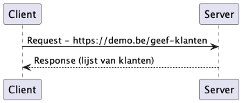
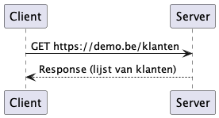
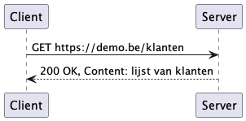

RESTful HTTP Api
Web Architectuur
Programma’s geschreven in de vakken Programmeren Basis en Programmeren Gevorderd resulteren in een enkele executable. Deze is bedoeld om lokaal uitgevoerd te worden en communiceert niet met de buitenwereld.
In de bedrijfswereld bestaat software veelal uit verschillende componenten en applicaties die met elkaar communiceren over een netwerk. Dit kan een privé-netwerk zijn, of het internet. Opdat deze communicatie vlot en voorspelbaar zou verlopen, moeten er goede afspraken gemaakt worden.
In dit vak worden technieken en technologieën aangeleerd die nodig zijn om een brug te slaan naar de online wereld, die in Programmeren Gevorderd 3 uitgediept wordt.
HTTP
Het Hypertext Transfer Protocol (HTTP) is een verzameling van afspraken die bepalen hoe applicaties via internet met elkaar kunnen communiceren.
Correct geconfigureerde moderne computersystemen gebruiken HTTPS (Hypertext Transfer Protocol Secure). HTTPS past encryptie toe waardoor de communicatie veilig verloopt.
- Request
-
Het vraag gedeelte van een informatieuitwisseling.
- Response
-
Het antwoord gedeelte van een informatieuitwisseling.

- URL
-
Uniform Resource Locator, een web adres.

- Method
-
De intentie van een Request
-
GET: Geef mij datgene waar ik naar vraag. -
POST: Verwerk wat ik je stuur. -
PUT: Bewaar of overschrijf wat ik je stuur. -
DELETE: Verwijder datgene waar ik naar verwijs. -
PATCH: Overschrijf een stukje van datgene waar ik naar verwijs
-

Bij het bezoeken van een URL via een web browser, zal deze standaard een GET operatie doen.
- Header
-
Randinformatie omtrent Request/Response.
- Content
-
De inhoud van een Request/Response.
Een POST Request kan bijvoorbeeld als content de gegevens van een nieuwe klant, nieuw product of nieuwe bestelling bevatten.
Een GET Request zal bijvoorbeeld een Response krijgen met daarin een lijst van bestaande klanten.
Status: Categorie van de Response.
-
100-199: "Information"
-
200-299: "Success"
-
300-399: "Redirect" (doorverwijzing naar andere url)
-
400-499: "Client Error" (probleem met Request)
-
500-599: "Server Error" (probleem tijdens verwerking Request)

| Mozilla onderhoudt zeer goeie documentatie betreffende het gebruik van deze response codes. |
REST
Wanneer componenten die over HTTP communiceren elkaar begrijpen - status codes, content etc. - bekomen we een werkend systeem. Dat is prima, maar laat veel ruimte voor interpretatie. Het is wenselijk een bepaalde aanpak globaal toe te passen zodat mensen en systemen vlotter kunnen samenwerken. Om deze reden werd REST in het leven geroepen.
REST (REpresentational State Transfer) is een architectuurmodel, geen protocol of standaard, voor het bouwen van gedistribueerde systemen. Het is momenteel de meest gebruikte manier om web APIs (Application Programming Interfaces) te implementeren.
Architectuurprincipes
Web api’s die voldoen aan de REST architectuurprincipes zijn RESTful. REST is dus niet zomaar een synoniem voor HTTP/Web api. Er werden zes Guiding Principles bepaald.
- Uniform Interface
-
Zodra een ontwikkelaar vertrouwd is met een van je API’s, zou hij een vergelijkbare aanpak moeten kunnen volgen voor andere API’s.
- Client-Server
-
Servers en clients kunnen ook onafhankelijk van elkaar worden vervangen en ontwikkeld, zolang de interface tussen hen niet wordt gewijzigd.
- Stateless
-
Er mag geen client-context op de server worden opgeslagen tussen verzoeken. De client is verantwoordelijk voor het beheren van de status van de applicatie.
- Cacheable
-
Goed beheerde caching elimineert gedeeltelijk of volledig enkele client-server interacties, waardoor de schaalbaarheid en prestaties verder verbeteren.
- Layered System
-
REST stelt je in staat om een gelaagde systeemarchitectuur te gebruiken waarbij je de API’s op server A implementeert, gegevens opslaat op server B en verzoeken authenticeert op server C, bijvoorbeeld. Een client kan doorgaans niet zien of hij direct is verbonden met de eindserver of met een tussenliggende server.
- Code on Demand (Optional)
-
Meestal stuur je de statische representaties van bronnen in de vorm van XML of JSON. Maar wanneer dat nodig is, ben je vrij om uitvoerbare code terug te sturen om een deel van je applicatie te ondersteunen. Dit was in het verleden van toepassing op bijvoorbeeld Java Applets en Flash. Denk hedendaags vooral aan javascript. Bestanden met javascript broncode worden op de server bewaard als tekst. Ze worden verstuurd naar een web-app en pas daar uitgevoerd.
Richardson Maturity Model
De mate waarin een api voldoet aan de principes bepaalt de graad van maturiteit op het Richardson Maturity Model.
- Level 0
-
Single URI & Single Verb - Alle intentie in de Content. Er is maar 1 URI en 1 verb in gebruik. Deze vertellen ons dus niets over de gegevensuitwisseling.
- Level 1
-
Multiple URI’s & Single Verb - De URI vertelt iets over het onderwerp, maar het enkele verb niets over de intentie.
- Level 2
-
Multiple URI’s & Multiple Verbs - De URI vertelt iets over het onderwerp en het verb over de intentie. Dit is wat vele bedrijven als de baseline van een RESTful api.
- Level 3
-
De meeste RESTful api’s die in productie draaien hebben een Level 2 maturiteit. HATEOAS (Hypermedia as the Engine of Application State) wordt immers vaak weggelaten, waardoor clients wel expliciete kennis van de endpoints voorbij de api root nodig hebben. Deze expliciete codering van de api structuur in de client is wat HATEOAS wil vermijden.
JSON
JSON (JavaScript Object Notation) is een formaat voor gegevensuitwisseling dat gemakkelijk leesbaar is voor zowel mensen als machines. Het wordt vaak gebruikt om gegevens te verzenden tussen een server en een webapplicatie.
De syntax van JSON bestaat uit objecten en arrays. Een object wordt weergegeven door accolades {} en bevat key-value pairs, waarbij de key altijd een string is en de waarde een string, getal, boolean, array, object of null kan zijn. Arrays worden weergegeven door vierkante haken [] en bevatten een geordende lijst van waarden.
{
"naam": "Timmy",
"leeftijd": 21,
"isStudent": true,
"vakken": ["communicatie", "programmeren"],
"adres": {
"straat": "Arbeidsstraat",
"nummer": 1337,
"stad": "Aalst"
}
}Tijdens de lessen zal JSON gebruikt worden als dataformaat in de RESTful api’s.
XML
XML (Extensible Markup Language) en JSON zijn beide formaten voor gegevensuitwisseling, maar XML is ouder en werd oorspronkelijk ontwikkeld in de late jaren '90.
XML is ontworpen om gegevens op een gestructureerde manier te beschrijven en wordt vaak gebruikt in configuratiebestanden, documentopslag en gegevensuitwisseling tussen verschillende systemen. Het maakt gebruik van tags om gegevens te omsluiten, vergelijkbaar met HTML, en is zeer flexibel omdat je je eigen tags kunt definiëren.
Hoewel kennis van XML nog steeds nuttig is, bijvoorbeeld in de financiële sector, heeft JSON de voorkeur gekregen in moderne computersystemen. JSON is eenvoudiger en lichter dan XML.
<persoon>
<naam>Timmy</naam>
<leeftijd>21</leeftijd>
<isStudent>true</isStudent>
<vakken>
<vak>communicatie</vak>
<vak>programmeren</vak>
</vakken>
<adres>
<straat>Arbeidsstraat</straat>
<nummer>1337</nummer>
<stad>Aalst</stad>
</adres>
</persoon>Enkel praktische tips voor wie met XML in contact komt:
-
Je kan de structuur van een geldig (applicatie- of werkveldgebonden) XML-document definiëren met een DTD of XML Schema.
-
Je kan een XML-bestand transformeren met een XSLT definitie.
-
Je kan een XML web service beschrijven met een WSDL file.
.Net Minimal Api
| Dit scenario speelt zich, om gefocust te blijven op de essentie, hoofdzakelijk af in de CLI. Je kan het project uiteraard ook vanuit dezelfde template aanmaken via een IDE. |
Maak een nieuw C# project op basis van de web template.
stefancourteaux@MacBook-Pro-van-Stefan % dotnet new web -o DemoApi The template "ASP.NET Core Empty" was created successfully. Processing post-creation actions... Restoring /Users/stefancourteaux/Source/Gevorderd2/DemoApi/DemoApi.csproj: Determining projects to restore... Restored /Users/stefancourteaux/Source/Gevorderd2/DemoApi/DemoApi.csproj (in 26 ms). Restore succeeded.
Inspecteer de inhoud van Program.cs.
stefancourteaux@MacBook-Pro-van-Stefan % cat Program.cs
Windows equivalent voor cat is type
|
var builder = WebApplication.CreateBuilder(args);
var app = builder.Build();
app.MapGet("/", () => "Hello World!"); (1)
app.Run();| 1 | Er wordt een HTTP GET gemapped op pad /. Dit geeft de platte tekst "Hello World" terug. |
Start het project.
stefancourteaux@MacBook-Pro-van-Stefan % dotnet run
Building...
info: Microsoft.Hosting.Lifetime[14]
Now listening on: http://localhost:5269 (1)
info: Microsoft.Hosting.Lifetime[0]
Application started. Press Ctrl+C to shut down.
| 1 | De web api is lokaal bereikbaar op dit adres. |
Navigeer in een web browser naar het relevante adres en observeer het resultaat.
Stop de executie.
Verander in de broncode de GET naar een POST operatie.
nano Program.cs
Windows equivalent voor nano is notepad.exe
|
var builder = WebApplication.CreateBuilder(args);
var app = builder.Build();
app.MapPost("/", () => "Hello World!");(1)
app.Run();| 1 | MapGet werd vervangen door MapPost. |
Start het project opnieuw
stefancourteaux@MacBook-Pro-van-Stefan % dotnet run
Building...
info: Microsoft.Hosting.Lifetime[14]
Now listening on: http://localhost:5269 (1)
info: Microsoft.Hosting.Lifetime[0]
Application started. Press Ctrl+C to shut down.
Navigeer in een web browser naar het adres.
Deze keer is er geen resultaat. Een web browser voert immers standaard GET requests uit. Web browsers zijn om die reden niet geschikt voor het testen van web api’s.
Postman
Bij het bouwen, testen en verkennen van web api’s heeft men nood aan een tool om de verschillende Requests te beheren en uit te voeren. Op moment van schrijven is Postman de meest gebruikte app.
Bezoek de lokaal draaiende web api opnieuw, maar nu vanuit Postman. Observeer de duidelijke presentatie van Request, Response en de foutmelding.
Selecteer POST als methode en probeer opnieuw. Nu slaagt de operatie.
.http files zijn ook handig om web api’s te testen, maar Postman biedt een veel robuustere feature set.
|